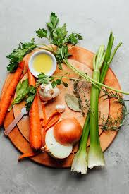

Pure Vegetable Bowl
Pure Vegetable Bowl is a wholesome, nourishing dish perfect for a light yet satisfying meal. Start by sautéing 1 chopped onion and 2 minced garlic cloves in olive oil until soft and fragrant. Add 1 diced carrot, 1 chopped bell pepper, and 1 zucchini, cooking until they begin to soften. Stir in 1 tablespoon of flour to lightly thicken the base, then pour in 1 cup of vegetable broth and ½ cup of coconut milk or heavy cream, letting it simmer until the sauce begins to thicken.
Rating :
Time : 40 Mins
Category : Main Dish
Tags : Onion, garlic, olive oil, carrot, bell pepper, zucchini, flour, vegetable broth, coconut milk , soy sauce, smoked paprika, cherry tomatoes, broccoli, green beans, spinach, salt, pepper, parsley
Ingredients
| Ingredients | Image | Ingredients | Image |
|---|---|---|---|
| Olive Oil |  |
Bell Peppers | 
|
| zucchini | 
| parsley | 
|
| broccoli | 
| Vegetable Broth |  |
Recipe
Pure Vegetable Bowl is a wholesome, vibrant dish that makes for a comforting and satisfying meal, packed with natural flavors and nutrients. To prepare this delightful recipe, begin by heating olive oil in a pan over medium heat and sautéing one finely chopped onion along with two minced garlic cloves until they become soft and aromatic.Next, add one diced carrot, one chopped bell pepper, and one sliced zucchini to the pan, cooking until the vegetables begin to soften and develop a light golden color.
At this stage, add one tablespoon of soy sauce, one teaspoon of smoked paprika, and a handful of halved cherry tomatoes, stirring everything together to create a savory, slightly smoky, and tangy flavor profile. Next, toss in a generous amount of broccoli florets, green beans, and fresh spinach, cooking until they become tender while still retaining their vibrant color and crunch.Once the vegetables are slightly tender and beginning to caramelize, sprinkle one tablespoon of flour over the mixture and stir well to coat evenly. Gradually pour in one cup of vegetable broth while stirring continuously to avoid lumps, followed by half a cup of coconut milk or heavy cream. Allow the mixture to simmer gently until it thickens into a smooth, velvety consistency.
For an added burst of flavor, you can also include a splash of lemon juice or a pinch of chili flakes. Season the dish with salt and pepper to taste, ensuring a well-balanced and satisfying finish. Finally, garnish with freshly chopped parsley or cilantro for a touch of freshness and a pop of green, and serve hot over a bed of quinoa, couscous, or rice for a nourishing and comforting meal. Finally, garnish with freshly chopped parsley and serve hot over pasta, egg noodles, or a bed of rice to fully enjoy this rich and indulgent dish.For serving, Chicken Stroganoff pairs wonderfully with buttery egg noodles, fluffy white rice, or creamy mashed potatoes, allowing you to soak up every bit of the rich sauce. To elevate the dish further, serve it alongside a crisp green salad or a side of roasted vegetables. This dish is not only easy to prepare but also a crowd-pleaser, making it perfect for cozy nights at home or entertaining guests.